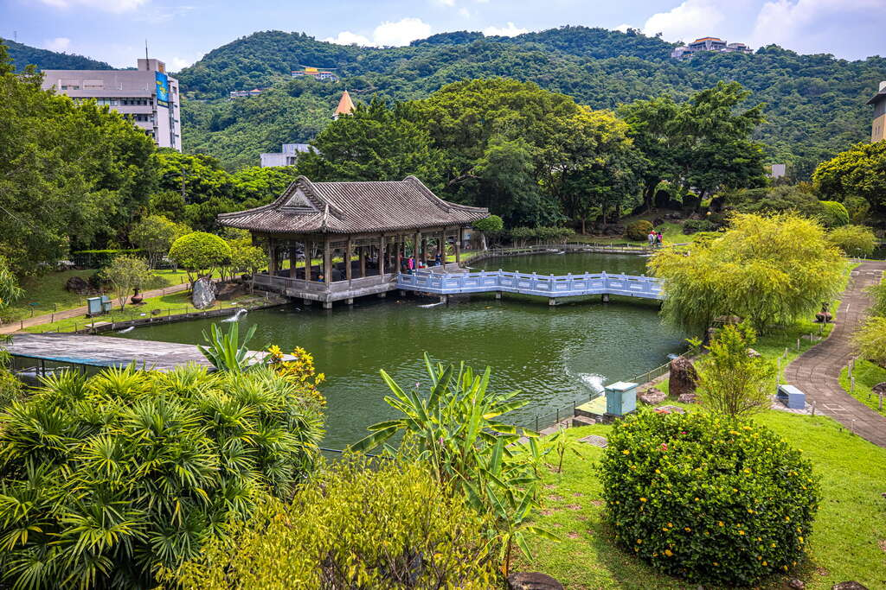
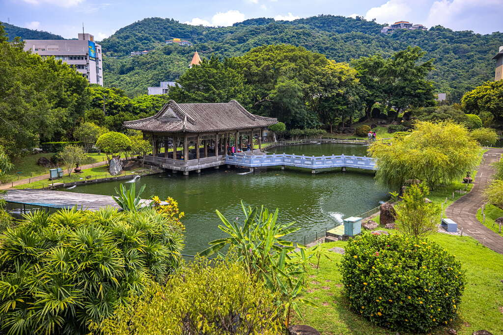

國立故宮博物院位於台北市士林區至善路二段、外雙溪地區，於西元1965年10月25日興建完工，中國宮殿式的建築，一、二、三層為展覽陳列空間， 四樓為休憩茶座「三希堂」，藏有全世界最多的無價中華藝術寶藏，收藏品主要承襲自宋、元、明、清四朝，幾乎涵蓋了整部五千年的中國歷史， 數量達65萬5千多件，國立故宮博物院擁有「中華文化寶庫」的美名；國立故宮博物院除了展覽品豐富以外， 提供中、英、法、德、日、西、韓等七國語言專業導覽，並定期舉辦各類文物研習課程、專題演講及巡迴展出活動，出版130種以上的刊物及專輯， 實為世界的文化寶地，國立故宮博物院是來台灣旅遊的必訪之地。
在國立故宮博物院典藏為數近70萬件文物與藝術作品，大部分是原先國立北平故宮博物院、國立中央博物院籌備處和國立北平圖書館等機構所藏來自紫禁城、 盛京行宮、避暑山莊、頤和園、靜宜園和國子監等處皇家舊藏；另有部分是編列預算購置，接收自第二次世界大戰結束日本歸還部分文物， 以及透過各界捐贈和徵集而來。藏品時間跨度涵蓋新石器時代至今長達8,000年，各類藏品分別交由器物處、書畫文獻處和南院處等3個策展部門管理， 當中以長篇銘文的青銅器、古代早期的名家書畫、善本古籍和官窯瓷器等蒐藏最具影響力。 展廳內是按照文物類別以編年方式系統性地陳設7,000件展品，器物類展件相隔半年至2年輪換一次，書畫和圖書文獻類展件為每3個月定期更換。